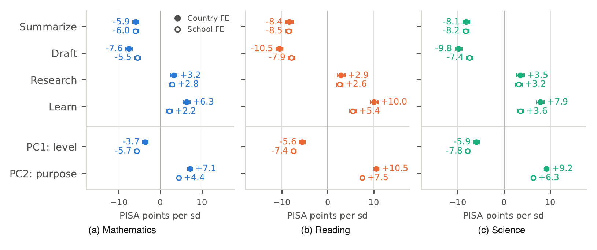
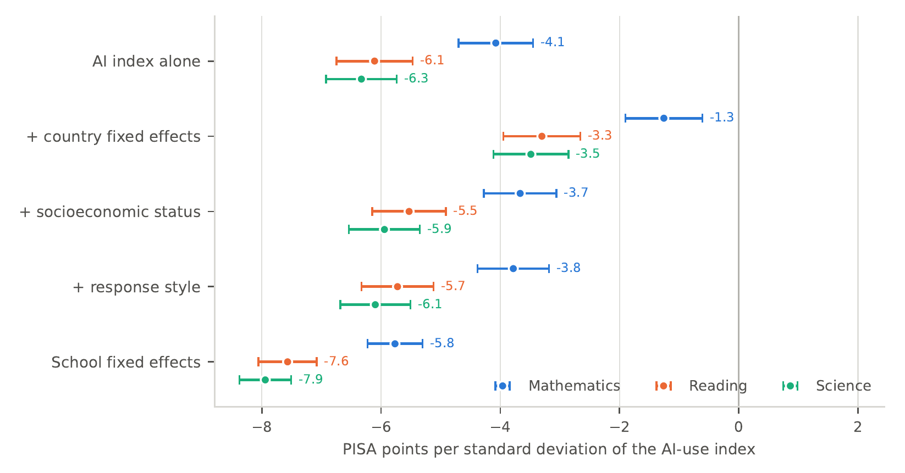
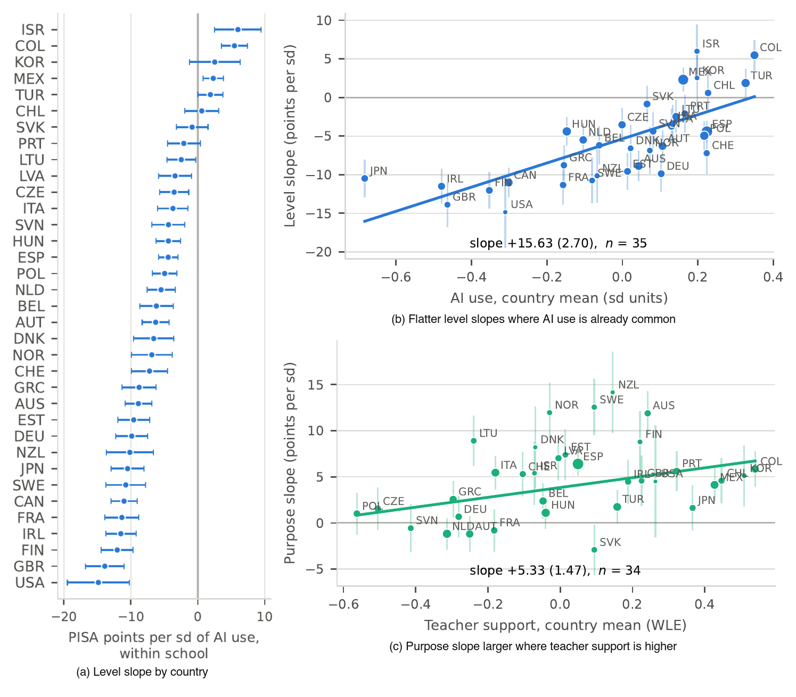

Substitute or Complement? Generative AI Use and Student Achievement: Evidence from PISA 2025
Ignacio Lepe & Dante Contreras · Working paper, 2026
Abstract
Generative AI can substitute for a student’s effort, writing the essay, or complement it, explaining the material so they can write it. In PISA 2025, 54.2 percent of 15-year-olds in OECD countries use a chatbot at least weekly for school tasks. Comparing schoolmates with similar backgrounds, we find that more AI use is associated with lower achievement. Holding total use fixed, drafting and summarizing with AI are associated with lower scores, while research and learning go with higher ones. The associations are cross-sectional, but selection on ability alone would predict one direction for every purpose of AI use.
Insights

What students use AI for pulls in opposite directions. Holding total use fixed, drafting a writing assignment or summarizing a text goes with lower scores, while research and help with learning go with higher ones. In mathematics the split is about −7.6 and −5.9 points against +3.2 and +6.3 per standard deviation of each item; reading and science show the same reversal, and it survives when students are compared with their own schoolmates (hollow markers). Ability sorting cannot produce this pattern: a struggling student would reach for a chatbot for every purpose, not only the ones that produce the work.

On average, more chatbot use still goes with lower scores, and the gap grows as the comparison gets tighter. Each marker is the association between a one-standard-deviation rise in the chatbot index and PISA scores (mathematics in blue, reading in orange, science in green). Adding country fixed effects shrinks the gap, but adding socioeconomic status makes it larger again: AI use is a normal good, so leaving status out masks the gradient. Comparing schoolmates, the last row, is the most negative of all: −5.8 points in mathematics, −7.6 in reading, −7.9 in science. Sorting across schools was hiding the association, not creating it.

The gradient is not the same everywhere. Panel (a) ranks each country’s within-school association between chatbot use and mathematics: around −15 points per standard deviation in the United States and Britain, positive in Israel, Colombia and Mexico, and near zero in Chile. Panel (b) shows that this level slope is flatter where AI use is already common. Panel (c) is the policy-relevant pattern: shifting use toward learning is more strongly associated with achievement in school systems where students report more teacher support.
Citation
Lepe, I., & Contreras, D. (2026). Substitute or complement? Generative AI use and student achievement: Evidence from PISA 2025 [Working paper]. https://lepe.cl/papers/ai-use-pisa.pdf
@techreport{lepe2026substitute,
author = {Lepe, Ignacio and Contreras, Dante},
title = {Substitute or Complement? Generative AI Use and Student Achievement: Evidence from PISA 2025},
year = {2026},
type = {Working paper},
url = {https://lepe.cl/papers/ai-use-pisa.pdf}
}